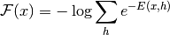

Restricted Boltzmann Machines (RBM)¶
Note
This section assumes the reader has already read through Classifying MNIST digits using Logistic Regression and Multilayer Perceptron. Additionally it uses the following Theano functions and concepts: T.tanh, shared variables, basic arithmetic ops, T.grad, Random numbers, floatX and scan. If you intend to run the code on GPU also read GPU.
Note
The code for this section is available for download here.
Energy-Based Models (EBM)¶
Energy-based models associate a scalar energy to each configuration of the variables of interest. Learning corresponds to modifying that energy function so that its shape has desirable properties. For example, we would like plausible or desirable configurations to have low energy. Energy-based probabilistic models define a probability distribution through an energy function, as follows:
(1)
The normalizing factor  is called the partition function by analogy
with physical systems.
is called the partition function by analogy
with physical systems.
An energy-based model can be learnt by performing (stochastic) gradient descent on the empirical negative log-likelihood of the training data. As for the logistic regression we will first define the log-likelihood and then the loss function as being the negative log-likelihood.
using the stochastic gradient , where  are the parameters of the model.
are the parameters of the model.
EBMs with Hidden Units
In many cases of interest, we do not observe the example  fully, or we
want to introduce some non-observed variables to increase the expressive power
of the model. So we consider an observed part (still denoted here) and a
hidden part
fully, or we
want to introduce some non-observed variables to increase the expressive power
of the model. So we consider an observed part (still denoted here) and a
hidden part  . We can then write:
. We can then write:
(2)
In such cases, to map this formulation to one similar to Eq. (1), we introduce the notation (inspired from physics) of free energy, defined as follows:
(3)
which allows us to write,
The data negative log-likelihood gradient then has a particularly interesting form.
(4)
Notice that the above gradient contains two terms, which are referred to as the positive and negative phase. The terms positive and negative do not refer to the sign of each term in the equation, but rather reflect their effect on the probability density defined by the model. The first term increases the probability of training data (by reducing the corresponding free energy), while the second term decreases the probability of samples generated by the model.
It is usually difficult to determine this gradient analytically, as it
involves the computation of
. This is
nothing less than an expectation over all possible configurations of the input
(under the distribution  formed by the model) !
formed by the model) !
The first step in making this computation tractable is to estimate the expectation using a fixed number of model samples. Samples used to estimate the negative phase gradient are referred to as negative particles, which are denoted as . The gradient can then be written as:
(5)
where we would ideally like elements of to be sampled
according to (i.e. we are doing Monte-Carlo).
With the above formula, we almost have a pratical, stochastic algorithm for
learning an EBM. The only missing ingredient is how to extract these negative
particles . While the statistical literature abounds with
sampling methods, Markov Chain Monte Carlo methods are especially well suited
for models such as the Restricted Boltzmann Machines (RBM), a specific type of
EBM.
Restricted Boltzmann Machines (RBM)¶
Boltzmann Machines (BMs) are a particular form of log-linear Markov Random Field (MRF), i.e., for which the energy function is linear in its free parameters. To make them powerful enough to represent complicated distributions (i.e., go from the limited parametric setting to a non-parametric one), we consider that some of the variables are never observed (they are called hidden). By having more hidden variables (also called hidden units), we can increase the modeling capacity of the Boltzmann Machine (BM). Restricted Boltzmann Machines further restrict BMs to those without visible-visible and hidden-hidden connections. A graphical depiction of an RBM is shown below.
The energy function of an RBM is defined as:
(6)
where  represents the weights connecting hidden and visible units and
represents the weights connecting hidden and visible units and
 ,
,  are the offsets of the visible and hidden layers
respectively.
are the offsets of the visible and hidden layers
respectively.
This translates directly to the following free energy formula:
Because of the specific structure of RBMs, visible and hidden units are conditionally independent given one-another. Using this property, we can write:
RBMs with binary units
In the commonly studied case of using binary units (where and  ), we obtain from Eq. (6) and (2), a probabilistic
version of the usual neuron activation function:
), we obtain from Eq. (6) and (2), a probabilistic
version of the usual neuron activation function:
(7)
(8)
The free energy of an RBM with binary units further simplifies to:
(9)
Update Equations with Binary Units
Combining Eqs. (5) with (9), we obtain the following log-likelihood gradients for an RBM with binary units:
(10)
For a more detailed derivation of these equations, we refer the reader to the following page, or to section 5 of Learning Deep Architectures for AI. We will however not use these formulas, but rather get the gradient using Theano T.grad from equation (4).
Sampling in an RBM¶
Samples of  can be obtained by running a Markov chain to
convergence, using Gibbs sampling as the transition operator.
can be obtained by running a Markov chain to
convergence, using Gibbs sampling as the transition operator.
Gibbs sampling of the joint of N random variables
is done through a sequence of N sampling sub-steps of the form
where contains the
other random variables in  excluding .
excluding .
For RBMs, consists of the set of visible and hidden units. However,
since they are conditionally independent, one can perform block Gibbs
sampling. In this setting, visible units are sampled simultaneously given
fixed values of the hidden units. Similarly, hidden units are sampled
simultaneously given the visibles. A step in the Markov chain is thus taken as
follows:
where refers to the set of all hidden units at the n-th step of the Markov chain. What it means is that, for example, is randomly chosen to be 1 (versus 0) with probability , and similarly, is randomly chosen to be 1 (versus 0) with probability .
This can be illustrated graphically:
As , samples are guaranteed to be accurate samples of .
In theory, each parameter update in the learning process would require running one such chain to convergence. It is needless to say that doing so would be prohibitively expensive. As such, several algorithms have been devised for RBMs, in order to efficiently sample from during the learning process.
Contrastive Divergence (CD-k)¶
Contrastive Divergence uses two tricks to speed up the sampling process:
- since we eventually want (the true, underlying
distribution of the data), we initialize the Markov chain with a training
example (i.e., from a distribution that is expected to be close to
 ,
so that the chain will be already close to having converged to its final distribution ).
,
so that the chain will be already close to having converged to its final distribution ). - CD does not wait for the chain to converge. Samples are obtained after only
k-steps of Gibbs sampling. In pratice,
 has been shown to work
surprisingly well.
has been shown to work
surprisingly well.
Persistent CD¶
Persistent CD [Tieleman08] uses another approximation for sampling from . It relies on a single Markov chain, which has a persistent state (i.e., not restarting a chain for each observed example). For each parameter update, we extract new samples by simply running the chain for k-steps. The state of the chain is then preserved for subsequent updates.
The general intuition is that if parameter updates are small enough compared to the mixing rate of the chain, the Markov chain should be able to “catch up” to changes in the model.
Implementation¶
We construct an RBM class. The parameters of the network can either be
initialized by the constructor or can be passed as arguments. This option is
useful when an RBM is used as the building block of a deep network, in which
case the weight matrix and the hidden layer bias is shared with the
corresponding sigmoidal layer of an MLP network.
Next step is to define functions which construct the symbolic graph associated with Eqs. (7) - (8). The code is as follows:
We can then use these functions to define the symbolic graph for a Gibbs sampling step. We define two functions:
gibbs_vhvwhich performs a step of Gibbs sampling starting from the visible units. As we shall see, this will be useful for sampling from the RBM.gibbs_hvhwhich performs a step of Gibbs sampling starting from the hidden units. This function will be useful for performing CD and PCD updates.
The code is as follows:
Note that we also return the pre-sigmoid activation. To understand why this is so you need to understand a bit about how Theano works. Whenever you compile a Theano function, the computational graph that you pass as input gets optimized for speed and stability. This is done by changing several parts of the subgraphs with others. One such optimization expresses terms of the form log(sigmoid(x)) in terms of softplus. We need this optimization for the cross-entropy since sigmoid of numbers larger than 30. (or even less then that) turn to 1. and numbers smaller than -30. turn to 0 which in terms will force theano to compute log(0) and therefore we will get either -inf or NaN as cost. If the value is expressed in terms of softplus we do not get this undesirable behaviour. This optimization usually works fine, but here we have a special case. The sigmoid is applied inside the scan op, while the log is outside. Therefore Theano will only see log(scan(..)) instead of log(sigmoid(..)) and will not apply the wanted optimization. We can not go and replace the sigmoid in scan with something else also, because this only needs to be done on the last step. Therefore the easiest and more efficient way is to get also the pre-sigmoid activation as an output of scan, and apply both the log and sigmoid outside scan such that Theano can catch and optimize the expression.
The class also has a function that computes the free energy of the model, needed for computing the gradient of the parameters (see Eq. (4)). Note that we also return the pre-sigmoid
We then add a get_cost_updates method, whose purpose is to generate the symbolic
gradients for CD-k and PCD-k updates.
Note that get_cost_updates takes as argument a variable called persistent. This allows us to use the same code to implement both CD and PCD.
To use PCD, persistent should refer to a shared variable which contains the
state of the Gibbs chain from the previous iteration.
If persistent is None, we initialize the Gibbs chain with the hidden
sample generated during the positive phase, therefore implementing CD. Once we have established the
starting point of the chain, we can then compute the sample at the end of the
Gibbs chain, sample that we need for getting the gradient (see Eq. (4)). To do so, we will use the scan
op provided by Theano, therefore we urge the reader to look it up by following this link.
Once we have the generated the chain we take the sample at the end of the
chain to get the free energy of the negative phase. Note that the
chain_end is a symbolical Theano variable expressed in terms of the model
parameters, and if we would apply T.grad naively, the function will
try to go through the Gibbs chain to get the gradients. This is not what we
want (it will mess up our gradients) and therefore we need to indicate to
T.grad that chain_end is a constant. We do this by using the argument
consider_constant of T.grad.
Finally, we add to the updates dictionary returned by scan (which contains
updates rules for random states of theano_rng) to contain the parameter
updates. In the case of PCD, these should also update the shared variable
containing the state of the Gibbs chain.
Tracking Progress¶
RBMs are particularly tricky to train. Because of the partition function
of Eq. (1), we cannot estimate the log-likelihood
during training. We therefore have no direct useful metric
for choosing the optimal hyperparameters.
Several options are available to the user.
Inspection of Negative Samples
Negative samples obtained during training can be visualized. As training progresses, we know that the model defined by the RBM becomes closer to the true underlying distribution, . Negative samples should thus look like samples from the training set. Obviously bad hyperparameters can be discarded in this fashion.
Visual Inspection of Filters
The filters learnt by the model can be visualized. This amounts to plotting the weights of each unit as a gray-scale image (after reshaping to a square matrix). Filters should pick out strong features in the data. While it is not clear for an arbitrary dataset, what these features should look like, training on MNIST usually results in filters which act as stroke detectors, while training on natural images lead to Gabor like filters if trained in conjunction with a sparsity criteria.
Proxies to Likelihood
Other, more tractable functions can be used as a proxy to the likelihood. When training an RBM with PCD, one can use pseudo-likelihood as the proxy. Pseudo-likelihood (PL) is much less expensive to compute, as it assumes that all bits are independent. Therefore,
Here denotes the set of all bits of except bit
 . The log-PL is therefore the sum of the log-probabilities of each
bit , conditioned on the state of all other bits. For MNIST, this
would involve summing over the 784 input dimensions, which remains rather
expensive. For this reason, we use the following stochastic approximation to
log-PL:
. The log-PL is therefore the sum of the log-probabilities of each
bit , conditioned on the state of all other bits. For MNIST, this
would involve summing over the 784 input dimensions, which remains rather
expensive. For this reason, we use the following stochastic approximation to
log-PL:
where the expectation is taken over the uniform random choice of index ,
and  is the number of visible units. In order to work with binary
units, we further introduce the notation
is the number of visible units. In order to work with binary
units, we further introduce the notation  to refer to
with bit-i being flipped (1->0, 0->1). The log-PL for an RBM with binary units is
then written as:
to refer to
with bit-i being flipped (1->0, 0->1). The log-PL for an RBM with binary units is
then written as:
We therefore return this cost as well as the RBM updates in the get_cost_updates function of the RBM class.
Notice that we modify the updates dictionary to increment the
index of bit . This will result in bit cycling over all possible
values , from one update to another.
Note that for CD training the cross-entropy cost between the input and the reconstruction (the same as the one used for the de-noising autoencoder) is more reliable then the pseudo-loglikelihood. Here is the code we use to compute the pseudo-likelihood:
Main Loop¶
We now have all the necessary ingredients to start training our network.
Before going over the training loop however, the reader should familiarize
himself with the function tile_raster_images (see Plotting Samples and Filters). Since
RBMs are generative models, we are interested in sampling from them and
plotting/visualizing these samples. We also want to visualize the filters
(weights) learnt by the RBM, to gain insights into what the RBM is actually
doing. Bear in mind however, that this does not provide the entire story,
since we neglect the biases and plot the weights up to a multiplicative
constant (weights are converted to values between 0 and 1).
Having these utility functions, we can start training the RBM and plot/save the filters after each training epoch. We train the RBM using PCD, as it has been shown to lead to a better generative model ([Tieleman08]).
Once the RBM is trained, we can then use the gibbs_vhv function to implement
the Gibbs chain required for sampling. We initialize the Gibbs chain starting
from test examples (although we could as well pick it from the training set)
in order to speed up convergence and avoid problems with random
initialization. We again use Theano’s scan op to do 1000 steps before
each plotting.
Next we create the 20 persistent chains in parallel to get our samples. To do so, we compile a theano function which performs one Gibbs step and updates the state of the persistent chain with the new visible sample. We apply this function iteratively for a large number of steps, plotting the samples at every 1000 steps.
Results¶
We ran the code with PCD-15, learning rate of 0.1 and a batch size of 20, for 15 epochs. Training the model takes 122.466 minutes on a Intel Xeon E5430 @ 2.66GHz CPU, with a single-threaded GotoBLAS.
The output was the following:
... loading data
Training epoch 0, cost is -90.6507246003
Training epoch 1, cost is -81.235857373
Training epoch 2, cost is -74.9120966945
Training epoch 3, cost is -73.0213216101
Training epoch 4, cost is -68.4098570497
Training epoch 5, cost is -63.2693021647
Training epoch 6, cost is -65.99578971
Training epoch 7, cost is -68.1236650015
Training epoch 8, cost is -68.3207365087
Training epoch 9, cost is -64.2949797113
Training epoch 10, cost is -61.5194867893
Training epoch 11, cost is -61.6539369402
Training epoch 12, cost is -63.5465278086
Training epoch 13, cost is -63.3787093527
Training epoch 14, cost is -62.755739271
Training took 122.466000 minutes
... plotting sample 0
... plotting sample 1
... plotting sample 2
... plotting sample 3
... plotting sample 4
... plotting sample 5
... plotting sample 6
... plotting sample 7
... plotting sample 8
... plotting sample 9
The pictures below show the filters after 15 epochs:
Filters obtained after 15 epochs.
Here are the samples generated by the RBM after training. Each row represents a mini-batch of negative particles (samples from independent Gibbs chains). 1000 steps of Gibbs sampling were taken between each of those rows.